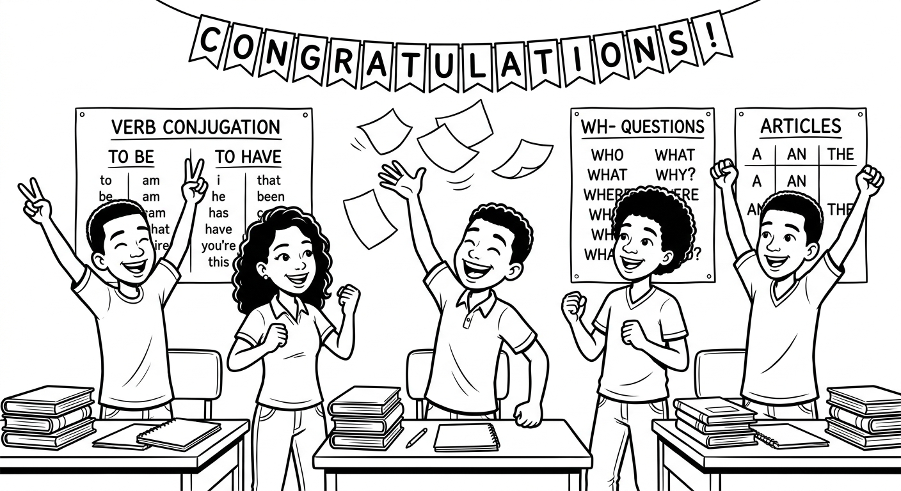
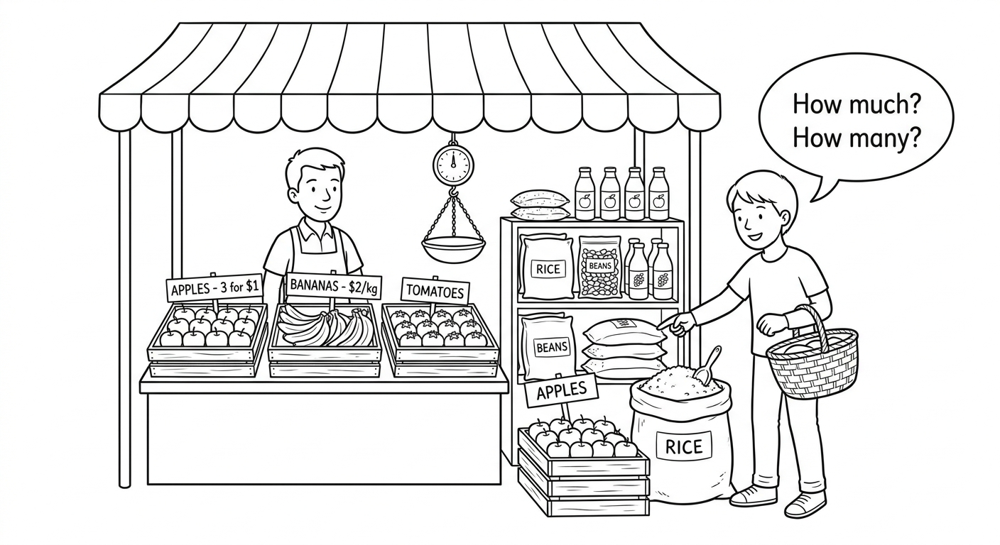
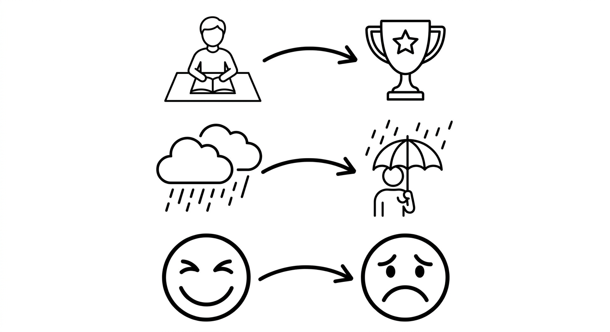
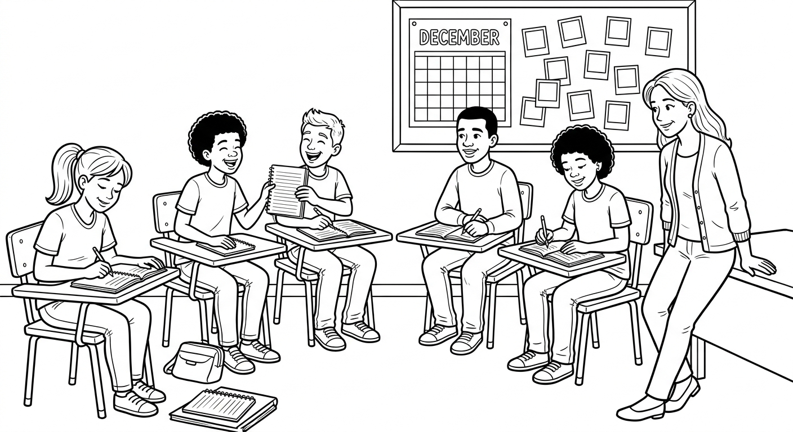
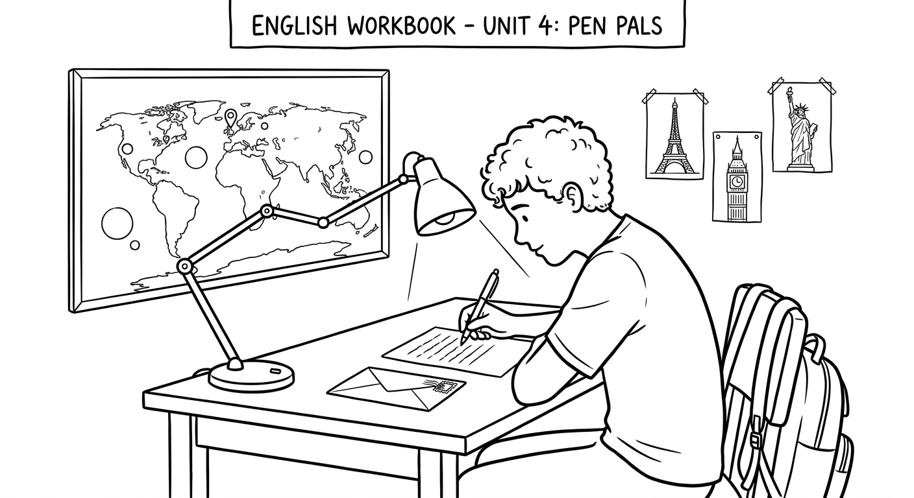

General Grammar Review
Congratulations! You have reached the final chapter of the B2 workbook. In this lesson, you will review all the grammar topics from Chapters 1 to 9. This is your chance to practice everything you have learned and prepare for more advanced English. Take your time, review the rules, and do your best!
Parabens! Voce chegou ao ultimo capitulo do livro B2. Nesta licao, voce vai revisar todos os topicos gramaticais dos Capitulos 1 a 9. Esta e a sua chance de praticar tudo o que aprendeu e se preparar para o ingles mais avancado. Faca o seu melhor!

Grammar Review Part 1: Tenses and Questions
We use the Present Simple for habits, routines, general truths, and permanent situations.
(Usamos o Present Simple para habitos, rotinas, verdades gerais e situacoes permanentes.)
| Form | Structure | Example |
|---|---|---|
| Affirmative | Subject + verb (+s/es for he/she/it) | Renata works at a hospital. |
| Negative | Subject + don't/doesn't + base verb | They don't speak French. |
| Question | Do/Does + subject + base verb? | Does Bruno play guitar? |
Key signals: always, usually, often, sometimes, rarely, never, every day, on Mondays, twice a week
(Sinais-chave: sempre, geralmente, frequentemente, as vezes, raramente, nunca, todo dia, as segundas, duas vezes por semana)
We use the Present Continuous for actions happening now, temporary situations, and future arrangements.
(Usamos o Present Continuous para acoes acontecendo agora, situacoes temporarias e planos futuros ja combinados.)
| Form | Structure | Example |
|---|---|---|
| Affirmative | Subject + am/is/are + verb-ing | Juliana is studying right now. |
| Negative | Subject + am/is/are + not + verb-ing | We aren't watching TV today. |
| Question | Am/Is/Are + subject + verb-ing? | Are you listening to me? |
Key signals: now, right now, at the moment, today, this week, currently, Look! Listen!
(Sinais-chave: agora, neste momento, hoje, esta semana, atualmente, Olhe! Escute!)
Structure: WH word + auxiliary (do/does/am/is/are) + subject + base verb/verb-ing?
| WH Word | Portugues | Asks about | Example |
|---|---|---|---|
| What | O que / Qual | things, activities | What does she study? |
| Where | Onde | places | Where do you live? |
| When | Quando | time | When does class start? |
| Who | Quem | people | Who teaches English? |
| Why | Por que | reasons | Why are you smiling? |
| How | Como | manner, method | How do you get to school? |
| How many | Quantos/as | quantity (countable) | How many brothers do you have? |
| How much | Quanto/a | quantity (uncountable) / price | How much water do you drink? |
| Present Simple | Present Continuous |
|---|---|
| Habits and routines | Actions happening NOW |
| General truths / permanent | Temporary situations |
| I walk to school every day. | I am walking to school right now. |
| She doesn't eat meat. | She isn't eating lunch at the moment. |
Stative verbs (know, like, want, need, believe, understand, have*) are NOT normally used in the continuous form.
(Verbos de estado geralmente NAO sao usados na forma continua.)
Suggested time: 30 minutes
Warm-up activity (5 min): Write two sentences on the board: "I eat rice every day" and "I am eating rice right now." Ask students to explain the difference and identify the tenses. Use this to activate prior knowledge before the review.
Strategy: Since this is a review chapter, encourage students to try the exercises first WITHOUT looking at the rule boxes. They can check the rules only if they get stuck. This builds confidence and helps identify areas that still need work.
L1 interference note: Brazilian students often struggle with the continuous form because Portuguese uses the gerund differently. Reinforce that "I am studying" is happening NOW, not a general habit.
Complete each sentence with the correct form of the verb in parentheses. Use the Present Simple or the Present Continuous. Pay attention to the time expressions!
(Complete cada frase com a forma correta do verbo entre parenteses. Use o Present Simple ou o Present Continuous. Preste atencao nas expressoes de tempo!)
Read each answer. Then write the WH question that matches it. The WH word is given in parentheses.
(Leia cada resposta. Depois escreva a pergunta WH correspondente. A palavra WH e dada entre parenteses.)
Answer: Beatriz lives in Fortaleza.
(Where) ?
Where does Beatriz live?Answer: They are studying for the English test.
(What) ?
What are they studying for?Answer: Rodrigo goes to the gym three times a week.
(How often) ?
How often does Rodrigo go to the gym?Answer: Because she wants to be a doctor.
(Why) ?
Why does she study so hard? (accept similar variations)Answer: Professor Carla teaches English at our school.
(Who) ?
Who teaches English at your school?Grammar Review Part 2: Nouns, Articles, and Quantifiers

| Rule | Singular | Plural |
|---|---|---|
| Most nouns: add -s | book | books |
| -s, -sh, -ch, -x, -z: add -es | bus, box | buses, boxes |
| Consonant + y: change to -ies | city, family | cities, families |
| -f / -fe: change to -ves | knife, life | knives, lives |
| Irregular plurals | child, person, tooth | children, people, teeth |
| Countable (contavel) | Uncountable (incontavel) |
|---|---|
| Can be counted: one apple, two apples | Cannot be counted: water, rice, information |
| Have singular and plural forms | Only singular form (NO -s) |
| Use: a/an, many, few, a few, How many? | Use: much, little, a little, How much? |
| Use: some, any, a lot of | Use: some, any, a lot of |
Cuidado: Em portugues, "informacao" e contavel, mas em ingles "information" e incontavel! Nao diga "informations."
| Article | Use | Example |
|---|---|---|
| a | Before consonant sounds (singular, first mention) | She is a student. |
| an | Before vowel sounds (singular, first mention) | He is an engineer. |
| the | Specific / already known / unique | The school is on Rua das Flores. |
| - (zero) | General / plural / uncountable (general sense) | - Music makes people happy. |
| Quantifier | Countable | Uncountable | Portugues |
|---|---|---|---|
| some | some books | some water | alguns / alguma / um pouco de |
| any | any students | any milk | algum / nenhum (neg. e perguntas) |
| many | many friends | --- | muitos/as |
| much | --- | much time | muito/a |
| a lot of | a lot of people | a lot of fun | muito/a, muitos/as |
| a few | a few ideas | --- | alguns/algumas (positivo) |
| a little | --- | a little sugar | um pouco de (positivo) |
Demonstratives:
| Singular | Plural | |
|---|---|---|
| Near (perto) | this (este/esta) | these (estes/estas) |
| Far (longe) | that (aquele/aquela) | those (aqueles/aquelas) |
There is / There are:
| Form | Singular / Uncountable | Plural |
|---|---|---|
| Affirmative | There is a park nearby. | There are three schools here. |
| Negative | There isn't any milk. | There aren't any buses today. |
| Question | Is there a supermarket? | Are there any students? |
| Wrong | Right | Why? |
|---|---|---|
| I need an information. | I need some information. | "Information" is uncountable |
| There is many people. | There are many people. | "People" is plural |
| I like the music. | I like - music. (in general) | No article for general statements |
| She is a engineer. | She is an engineer. | "Engineer" starts with a vowel sound |
| This books are mine. | These books are mine. | Plural = these/those |
(Cuidado com esses erros comuns! Muitos deles acontecem por causa de interferencia do portugues.)
Suggested time: 30 minutes
Activity idea (5 min): Before starting, give students a quick oral quiz: hold up objects in the classroom and ask questions like "What is this?" "How many chairs are there?" "Is there a computer in the room?" This activates all the target structures at once.
Vocabulary support: Students may need reminders about common uncountable nouns in English that are countable in Portuguese: information, advice, furniture, homework, news, luggage.
Differentiation: Stronger students can attempt the exercises without the rule boxes. Weaker students should be encouraged to use the rule boxes as reference while working.
Complete each sentence with the correct word from the options: a, an, the, some, any, many, much, this, that, these, those, there is, there are. Some sentences may have more than one correct answer.
(Complete cada frase com a palavra correta. Algumas frases podem ter mais de uma resposta correta.)
Each sentence below has ONE grammar mistake. Find the mistake and rewrite the sentence correctly on the line.
(Cada frase abaixo tem UM erro gramatical. Encontre o erro e reescreva a frase corretamente na linha.)
She don't like vegetables.
She doesn't like vegetables.There is many childrens in the park.
There are many children in the park.I need a advice about my homework.
I need some advice about my homework.This shoes are very comfortable.
These shoes are very comfortable.Marcos is eating lunch right now. He eats lunch every day at noon. He is liking rice and beans.
Marcos is eating lunch right now. He eats lunch every day at noon. He likes rice and beans. ("like" is a stative verb)How much students are there in your class?
How many students are there in your class?She is a honest person.
She is an honest person.Does Ana has any brothers or sisters?
Does Ana have any brothers or sisters?I like the music. It makes me happy.
I like music. It makes me happy. (no article for general statements)There isn't some milk in the fridge.
There isn't any milk in the fridge.Grammar Review Part 3: Connectors

Connectors are words that join ideas, sentences, or clauses. They help your English sound more natural and organized.
(Conectores sao palavras que ligam ideias, frases ou oracoes. Eles ajudam seu ingles a soar mais natural e organizado.)
1. Coordinating Connectors (join equal ideas)
| Connector | Portugues | Use | Example |
|---|---|---|---|
| and | e | addition | I study English and Spanish. |
| but | mas | contrast | She studies hard, but she doesn't pass. |
| or | ou | alternative | Do you want coffee or tea? |
| so | entao / por isso | result | It's raining, so we can't play outside. |
2. Subordinating Connectors (one idea depends on the other)
| Connector | Portugues | Use | Example |
|---|---|---|---|
| because | porque | reason | I study because I want a good job. |
| when | quando | time | When it rains, I take the bus. |
| if | se | condition | If you study, you will learn. |
| although / even though | embora / mesmo que | concession | Although she is tired, she keeps studying. |
3. Linking Words / Adverbs (connect sentences or paragraphs)
| Connector | Portugues | Use | Example |
|---|---|---|---|
| however | no entanto | contrast | I like math. However, I prefer English. |
| also / too | tambem | addition | She speaks English. She also speaks French. |
| for example | por exemplo | exemplification | I like sports. For example, I play soccer. |
| first / then / finally | primeiro / depois / finalmente | sequence | First, I wake up. Then, I have breakfast. |
Suggested time: 25 minutes
Mini-activity (5 min): Write a simple story on the board using no connectors: "I woke up. I had breakfast. I went to school. It was raining. I got wet." Ask students to improve it by adding connectors. This demonstrates the importance of connectors for fluency.
Common confusion: Students often confuse "but" and "however." Explain that "but" joins two clauses in one sentence, while "however" usually starts a new sentence (or follows a semicolon). Both show contrast.
L1 interference note: In Portuguese, "porque" can be used for both "because" and "why" in certain contexts. Reinforce that in English, "because" gives a reason and "why" asks for one.
Complete each sentence with the best connector from the box below. Use each connector only once.
and | but | so | because | when | if | although | however | also | for example
(Complete cada frase com o melhor conector. Use cada conector apenas uma vez.)
Combine each pair of sentences into one sentence using an appropriate connector. Write the complete sentence on the line. The connector type is given in parentheses as a hint.
(Combine cada par de frases em uma unica frase usando um conector apropriado. Escreva a frase completa na linha. O tipo de conector e dado como dica.)
Ana is studying hard. She wants to pass the exam. (reason)
Ana is studying hard because she wants to pass the exam.Lucas likes soccer. He doesn't like basketball. (contrast)
Lucas likes soccer, but he doesn't like basketball.It starts to rain. We close the windows. (time)
When it starts to rain, we close the windows.Fernanda didn't sleep well. She is tired today. (result)
Fernanda didn't sleep well, so she is tired today.The homework was hard. Beatriz finished it on time. (concession)
Although the homework was hard, Beatriz finished it on time.Reading: A Year at Incluir English

It is December, and the students at Incluir English are finishing their last week of classes. This is a special moment because they are looking back at everything they learned during the year. Three students - Beatriz, Rodrigo, and Juliana - are sitting in the classroom and talking about their experiences.
Beatriz is from Manaus. She lives with her parents and her two younger sisters in a small apartment near the school. She usually walks to class because it only takes fifteen minutes. "When I started the course, I didn't know much English," she says. "I could say 'hello' and 'thank you,' but that was all. Now I can talk about my daily routine, describe my neighborhood, and even write short paragraphs in English. I am really proud of myself!"
Beatriz remembers that she had a lot of difficulty with articles at the beginning. "In Portuguese, we use articles all the time - 'a musica,' 'o livro.' But in English, sometimes you don't use any article at all! For example, we say 'I like music,' not 'I like the music.' That was very confusing for me, but now I understand the rules much better."
Rodrigo is from Recife, but he is living in Sao Paulo this year because his father got a new job there. "This city is very different from Recife," he explains. "There are many more people here, and there isn't much green space near our apartment. However, there are a lot of cultural activities. For example, there are free museums and concerts every weekend." Rodrigo also says that he is enjoying the English course. "I like it because the teachers use Brazilian contexts. We talk about our cities, our food, and our culture. That makes it easier to learn."
Juliana lives in a small town near Campinas. She takes the bus to school every day, and the journey takes about forty-five minutes. Although the commute is long, she doesn't mind it. "I listen to English podcasts on the bus," she explains. "It's good practice, and the time goes fast." Juliana is currently reading a simple book in English. "Right now, I am reading a story about a girl who travels to London. It's a little difficult, but I understand most of it because I know many words now."
When asked about their favorite grammar topic, the three students give different answers. Beatriz likes the Present Continuous because she thinks it is fun to describe what people are doing right now. Rodrigo prefers quantifiers and "there is/there are" because he can use these structures to describe places. And Juliana's favorite topic is connectors. "Connectors make my writing so much better," she says. "Before, I wrote short, simple sentences. Now I can connect my ideas with words like 'because,' 'however,' and 'although.' My paragraphs sound more natural."
As the final class ends, the teacher asks the students to write one sentence about what English means to them. Beatriz writes: "English opens doors to new opportunities." Rodrigo writes: "Learning English helps me understand the world better." And Juliana writes: "English gives me confidence to dream bigger." These three students are proof that hard work, practice, and a good attitude can make a real difference.
Suggested time: 30 minutes (10 min reading, 20 min exercises)
Pre-reading activity (5 min): Ask students: "What is your favorite grammar topic from this year? Why?" and "What was the most difficult topic?" Let a few students share their answers.
Reading strategy: Encourage students to read the text once quickly for general comprehension. On the second reading, they should underline examples of the grammar structures they recognize (Present Simple, Present Continuous, articles, quantifiers, connectors, etc.).
Grammar spotting: After the exercises, you can ask students to find specific grammar structures in the text. For example: "Find two sentences with 'there is/there are'" or "Find three connectors in the text." This reinforces the review nature of the chapter.
Discussion: End with a class discussion: "Which student (Beatriz, Rodrigo, or Juliana) is most like you? Why?"
Read each sentence. Write T (True) or F (False) based on the reading passage. If the sentence is false, correct it.
(Leia cada frase. Escreva T (Verdadeiro) ou F (Falso) com base no texto. Se a frase for falsa, corrija-a.)
Answer each question in a complete sentence based on the reading passage.
(Responda cada pergunta em uma frase completa com base no texto.)
Why is Rodrigo living in Sao Paulo this year?
Rodrigo is living in Sao Paulo this year because his father got a new job there.What does Juliana do on the bus to practice English?
She listens to English podcasts on the bus.What was difficult for Beatriz when she started learning English? Give an example from the text.
Beatriz had difficulty with articles. For example, she was confused because in Portuguese you say "a musica" but in English you say "music" (without an article) when talking in general.What sentence did Juliana write about what English means to her?
Juliana wrote: "English gives me confidence to dream bigger."Final Writing Task: A Letter to a Pen Pal

Imagine you have a pen pal in another country who is also learning English. Write a letter introducing yourself and describing your life. Your letter should include information about:
- Your name, age, and where you live
- Your daily routine (what you do every day)
- Your city or neighborhood (what there is and what there isn't)
- What you are doing this week (temporary activities or plans)
- Your hobbies, likes, and dislikes
Write at least 10 sentences. Use the grammar structures you have learned in this course.
(Imagine que voce tem um amigo por correspondencia em outro pais que tambem esta aprendendo ingles. Escreva uma carta se apresentando e descrevendo sua vida. Escreva pelo menos 10 frases. Use as estruturas gramaticais que voce aprendeu neste curso.)
Start your letter like this:
Dear [pen pal's name],
My name is ______ and I am ______ years old. I live in ______, a city in Brazil...
Best wishes,
[Your name]
Before you hand in your letter, check that you have used:
- Present Simple for your habits and routines (I wake up, she studies, they don't work...)
- Present Continuous for actions happening now or this week (I am reading, we are preparing...)
- Correct plural forms (cities, children, people, knives...)
- Articles (a, an, the, or zero article where appropriate)
- Quantifiers (some, any, many, much, a lot of, a few, a little)
- Demonstratives (this, that, these, those)
- There is / There are to describe your city or neighborhood
- Connectors (and, but, because, so, however, although, when, if...)
- At least one WH question to ask your pen pal about their life
(Antes de entregar sua carta, verifique se voce usou todas essas estruturas!)
Suggested time: 30-40 minutes
Pre-writing activity (5 min): Ask students to brainstorm ideas using the checklist. They can make quick notes in Portuguese if needed, then write the letter in English.
Assessment criteria:
- Grammar variety (40%): Student uses at least 6 of the 9 grammar structures from the checklist
- Accuracy (25%): Correct verb forms, articles, plurals, and agreement
- Content (20%): Letter includes relevant personal information and descriptions as required
- Organization (15%): Letter has a clear beginning, middle, and end; ideas are connected with appropriate connectors
Minimum length: 10 sentences. Strong students may write 15-20 sentences.
Differentiation: For students who find this challenging, allow them to use the rule boxes from Units 10.1-10.3 as reference. For advanced students, ask them to also include questions for the pen pal and to compare their life in Brazil with what they imagine the pen pal's life is like.
Follow-up: If possible, have students exchange letters and write responses to each other's letters as a follow-up activity. This creates an authentic communication experience.
Sample answer:
Dear Emily,
My name is Rodrigo and I am 16 years old. I live in Recife, a beautiful city in the northeast of Brazil. There are many beaches near my house, and the weather is always warm. I live with my parents and my older brother, Felipe.
Every day, I wake up at 6:30 and take the bus to school. My classes start at 7:15. I study many subjects, but my favorite is English because I want to travel abroad someday. After school, I usually play soccer with my friends. We don't have a big field, but there is a small one near our apartment.
This week, I am studying for my final exams, so I am not playing soccer. I am also reading a book in English. Although it is a little difficult, I am enjoying it. My teacher says that reading is the best way to learn new vocabulary.
I also like music. I listen to a lot of Brazilian music, for example, sertanejo and funk. However, I also enjoy some English songs. Do you like music? What kind of music do you listen to?
Best wishes,
Rodrigo
Chapter 10 - Answer Key
Exercise 1: Present Simple or Present Continuous?
Exercise 2: Form the WH Question
Exercise 3: Articles, Quantifiers, and Demonstratives
Exercise 4: Find and Fix the Mistakes
Exercise 5: Choose the Right Connector
Exercise 6: Combine the Sentences
Exercise 7: True or False
Exercise 8: Answer the Questions
Exercise 9: Write a Letter to Your Pen Pal
Answers will vary. Check for:
- Use of at least 6 of the 9 grammar structures from the checklist
- Correct Present Simple forms (including third person -s)
- Correct Present Continuous forms (am/is/are + verb-ing)
- Appropriate use of articles (a/an/the/zero article)
- Correct quantifiers with countable and uncountable nouns
- At least one example of "there is/there are"
- At least 3 connectors used appropriately
- Minimum of 10 complete, coherent sentences
- Clear organization with beginning, middle, and end
- At least one WH question addressed to the pen pal
See Teacher Note above for a sample answer and detailed assessment criteria.